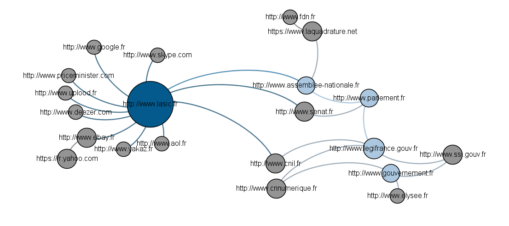
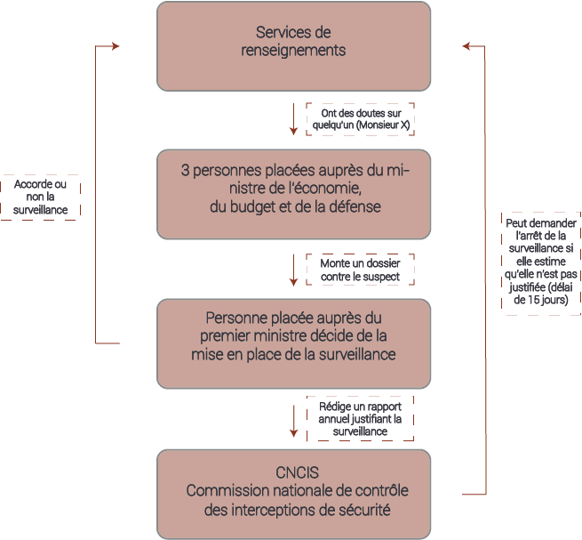

MENU

MENU

1. Acteurs gouvernementaux Le gouvernement et les sénateurs ont d'abord justifié la nécessité de la loi en avançant surtout des arguments économiques (le texte prévoyait la suppression de plusieurs dizaines de milliers de postes) et puis par la lutte anti-terroriste. Ils jugent que la loi est en aucun cas liberticide et que les libertés publiques sont présentes. Sénateurs : Jean-Pierre Sueur (Sénateur du Loiret), Jean-Louis Carrère (Sénateur des Landes). Ministère de la Défense : Jean-Yves Le Drian. Ministères de l’économie et de l’intérieur Premier Ministre : Manuel Valls 2. Commissions indépendantes CNCIS : La commission nationale de contrôle des interceptions de sécurité est une autorité administrative indépendante chargée de vérifier la légalité des demandes d’interceptions de données (demandes non judiciaires). CNIL : La Commission nationale de l’informatique et des libertés est chargée de veiller à ce que l’informatique soit au service du citoyen et qu’elle ne porte atteinte ni à l’identité humaine, ni aux droits de l’homme, ni à la vie privée, ni aux libertés individuelles ou publiques. La CNIL déplore le fait qu’elle n’ait pas été saisie au moment de l’examen du projet de loi. Elle soulève la présence de termes vagues dans la loi tels que “sollicitation du réseau”, “informations et documents” et demande qu’un débat général soit suscité sur la mise en place d’une “société de surveillance”. Voir l'article de la CNIL CNNum : Le Conseil national du numérique est une commission consultative indépendante, dont les missions ont été redéfinies et étendues par un décret du Président de la République. Le CNNum a pour mission de formuler de manière indépendante et de rendre publics des avis et des recommandations sur toute question relative à l’impact du numérique sur la société et sur l’économie. 3. Partis politiques UMP : L’union pour un mouvement populaire est un parti politique français de droite. De nombreuses personnes au sein du parti ont fait part de leur mécontentement vis à vis de cette loi et notamment Xavier Bertrand et Valérie Pécresse qui ont demandé président du groupe UMP à l'Assemblée nationale, Christian Jacob, de saisir le conseil constitutionnel concernant cette loi. X.Bertrand affirme que «la liste des données recueillies est non exhaustive ce qui pourrait représenter une atteinte grave aux libertés individuelles garanties par la Constitution», que «les finalités de recueil» des données prévues par l’article 20 sont «extrêmement larges». Laure De La Raudière : Députée d’Eure-et-Loire et membre titulaire du conseil national du numérique (CNNum) présenté plus loin.
FFDN : La fédération FDN regroupe des fournisseurs d'accès à internet associatifs afin de défendre et promouvoir la neutralité du Net et la liberté d’expression. ASIC : (Association des services internet communautaires) L'ASIC regroupe des intermédiaires du web tels que les moteurs de recherches, réseaux sociaux, plateformes de transactions, sites de partage de contenus,... L'organisation appelle à une suspension provisoire de la loi de la programmation militaire et demande un examen des dispositifs de surveillance mis en place par l'Etat. Elle s'oppose surtout à la généralisation du régime d'exception et appelle députés et sénateurs à saisir le Conseil constitutionnel. FDN : French Data Network est une association de fournisseurs d’accès à internet dont le but est de développer l’utilisation du réseau internet dans le respect de son éthique et promouvoir une utilisation d’internet à but non commercial. L’association a déposé une question prioritaire de constitutionnalité sur l’article 20 de la loi de la programmation militaire. Les arguments soulevés sont le manque de garanties pour le respect de la vie privée, atteinte de la loi à la liberté d’expression car le texte de la loi prévoit de surveiller les échanges de tous les citoyens, ce qui inclut les journalistes. L’association FDN soulève enfin le manque de clarté de la loi, en particulier sur les termes “informations et documents” et “sollicitation du réseau”. Voir l'article du FDN La Quadrature du Net : Association de défense des droits et libertés des citoyens sur Internet. Elle promeut une adaptation de la législation française et européenne qui soit fidèle aux valeurs qui ont présidé au développement d'Internet, notamment la libre circulation de la connaissance. Syntec numérique : Syndicat de défense de l'économie numérique française. AFDEL : Association qui se veut porte-parole de l'industrie numérique en France IAB France : L’Interactive Advertising Bureau est une organisation regroupant les acteurs de la publicité sur Internet défendant les intérêts de ces derniers. MEDEF : (Mouvement des entreprises de France) Le MEDEF, organisation patronale représentant les dirigeants d’entreprises françaises, juge que la loi nuit à l'attractivité de la France et en fait un endroit non propice à la création d'entreprises. Le MEDEF a demandé que l'article 13 ne soit pas adopté.Avis du MEDEF
Nous sommes partis d’un point de départ qui est l’ASIC. C’est une association de défense de droits sur internet et se trouve donc être un acteur majeur sur le sujet qu’est la loi de programmation militaire. On se rend bien compte sur la carte que les différentes sociétés indépendantes se réunissent en adhérant à des associations qui vont promouvoir leurs droits. Cela se voit avec les liens, ou interactions, existant entre l’ASIC et différents acteurs politiques. Nous avons donc fait le choix de représenter l’association entourée par ses sociétés membres d’un côté du graphe. De l’autre côté de ce graphe, nous retrouvons les différents acteurs politiques regroupés selon leur catégorie. Les acteurs gouvernementaux se retrouvent à l’autre bout de cette carte, tout à droite, car ils représentent avec les associations de défense des droits les deux extrémités du spectre des acteurs. On retrouve un peu à gauche et en bas de ces acteurs gouvernementaux des commissions indépendantes, la CNIL et la Commission Nationale du Numérique, qui sont des autorités administratives indépendantes du gouvernement pouvant être consultées ou saisies lors du passage de lois concernant l’internet et devant de ce fait bien être distinguées du gouvernement. Les acteurs juridiques se retrouvent eux à la gauche et au-dessus des acteurs gouvernementaux. Ils sont reliés eux-aussi au gouvernement et un acteur effectuant une sorte de liaison, tout comme les commissions indépendantes, entre les associations et le gouvernement. Nous avons fait le choix de nous limiter à une association principalement, ici l’ASIC, afin de bien comprendre comment s’effectuent les échanges entre le gouvernement et les associations de défense de droits. On peut toutefois retrouver d’autres associations, La Quadrature du Net et FDN, mais on s’aperçoit que le schéma est similaire c’est-à-dire que celles-ci sont reliées aux acteurs juridiques et non directement aux acteurs gouvernementaux. Un acteur majeur de l’internet dont l’absence peut troubler est Facebook. En effet, suite à notre travail de recherche, Facebook se trouvait avoir des liens avec tous les autres acteurs et sa présence sur cette carte en empêchait donc la lisibilité. C’est pourquoi nous l’avons donc enlevé, bien qu’il soit par exemple membre de l’ASIC.

MENU
La loi de programmation militaire permet la mise à disposition de données, suite à une surveillance, à différentes entités gouvernementales. Nous verrons ici comment, et par qui, les données sont collectées, quelles sont-elles, ainsi que la durée de conservation à laquelle elles sont assujetties.
Les Fournisseurs d’accès à Internet doivent être en mesure de donner aux services de renseignement toutes les données d’un citoyen visé par une écoute administrative. Dans le projet de loi, il est clairement spécifié que les FAI doivent fournir ces données à leur frais, grâce à des systèmes de détection approuvés par l’Etat. Néanmoins, le gouvernement n’a pas indiqué quels seraient ces systèmes de détection, et les solutions techniquement connues ne sont pas nombreuses. Les associations de défense des droits du citoyen craignent que la technique utilisée ne soit le Deep Packet Inspection, solution que le gouvernement a assuré ne pas vouloir choisir. Cette technique n’est pas illégale en soi, mais elle a été vendue par plusieurs sociétés leader sur ce marché (Qosmos, BlueCoat) à des dictatures afin de surveiller les opposants politiques sur Internet, et il semble impensable que ces sociétés fournissent les outils nécessaires à l’application de la loi. Notamment ces deux entreprises ont participé à la vente de matériel informatique basé sur le DPI permettant la traque des opposants politiques à la Syrie de Bachar El-Assad. Or, BlueCoat a été récemment entendue à l’Assemblée Nationale dans le cadre du nouveau projet de loi sur le renseignement militaire, et Qosmos est une entreprise connue pour travailler en collaboration avec les services de renseignement français. Les doutes des associations de défense des droits du citoyens sont donc les suivants : quelle technique va vraiment être utilisée par les FAI pour collecter les données, et quelle entreprise va fournir les systèmes d’interception ? L’Etat n’a toujours pas précisé ces questions.
L’article 13 permet aux services de renseignement des ministères de la Défense, de l’Intérieur, de l’Économie et du Budget d’accéder aux données conservées par les opérateurs de communications électroniques, les fournisseurs d’accès à internet et les hébergeurs et d’autoriser la réquisition de données de connexion dans le cadre d’enquêtes administratives concernant la sécurité nationale. Mais certains s’insurgent contre les autorités ayant accès à ces données. En effet Gilles Babinet, entrepreneur français et responsable des enjeux de l’économie numérique pour la France auprès de la Commission européenne, et Benjamin Bayart, ancien président de French Data Network, considèrent que le problème de cette loi est qu’il n’y a pas l’intervention d’un juge. Ils considèrent cela comme une absence de contre pouvoir, puisque la CNCIS n’intervient que 48 heures après l’interception des données. Et la CNCIS ne transmet au Premier ministre qu’un avis suggérant l’arrêt des écoutes, donc une simple suggestion, arrivant une fois que les écoutes ont eu lieu. Il n’y a donc, pour eux, pas de séparation entre les pouvoirs. Il est intéressant de noter que la phase d’enquête et de renseignement tient du pouvoir administratif et qu’il est donc logique que la CNCIS (autorité administrative indépendante) soit chargée du contrôle des demandes de collecte a posteriori et que ce ne soit pas un magistrat. De plus, concernant les interceptions de données, les perquisitions, les écoutes téléphoniques et la collecte de données, elles devront être ordonnées soit par un juge, soit par le Premier ministre, après avis et contrôle de la CNCIS. Par ailleurs, une personnalité qualifiée auprès du Premier ministre est chargée de valider les requêtes des ministères de l'Intérieur, de la Défense, de l’Économie et du Budget : “celle-ci est choisie par Matignon entre trois personnes proposées par la CNCIS. L’autorité effectue, une fois la procédure lancée et notifiée, un contrôle de légalité et de proportionnalité”.
Nous allons ici nous intéresser à la qualification exacte des informations auxquelles auront accès les autorités concernées. Un des débats phares lié à l’article 20 de la Loi de Programmation Militaire est la question des données accessibles. Il était en effet difficile de savoir, avant la publication du décret le 24 décembre 2014, s’il s’agirait des métadonnées comme précédemment ou bien si le contenu des communications serait entièrement accessible. Par conséquent, avant d’avoir eu la version définitive du projet de Loi de Programmation Militaire, l’attention portée par la CNIL sur les données ou informations mises à disposition était due à la volonté “d'ouvrir les vannes”. En effet, le projet avait suscité la crainte de la CNIL face à “une atteinte disproportionnée au respect de la vie privée”. De fait, les informations accessibles seront celles actuellement prévues par les articles R. 10-13 et R.10-14 CPCE du Code des postes et des communications électroniques, mais aussi par l’article 1er du décret du 25 février 2011 relatif à la conservation et à la communication des données permettant d'identifier toute personne ayant contribué à la création d'un contenu mis en ligne. Les informations visées sont donc : • Les caractéristiques techniques ainsi que la date, l'horaire et la durée de chaque communication ; • Les données « permettant d'identifier le ou les destinataires d’une communication » électronique ; • Les données permettant d'identifier l'origine de la communication ; • L'identifiant de la connexion ; • Les dates et heures de début et de fin de la connexion ; • Les types de protocoles utilisés pour la connexion au service et pour le transfert des contenus • Les informations fournies lors de la souscription d’un contrat d’abonnement à Internet ou lors de la création d’un compte auprès d’un hébergeur : l’identifiant de la connexion utilisée pour la création du compte, les noms et prénoms, adresse postale, pseudonymes utilisés, adresse email, numéros de téléphone, « mot de passe ainsi que les données permettant de le vérifier ou de le modifier » ; • D’éventuelles informations relatives à un paiement : type, montant et référence du paiement, ou bien encore date et heure de la transaction. Le contenu interne des communications interceptées ne sera pas mis à disposition des autorités en vigueur. Enfin, la CNIL a ainsi salué les dispositions mentionnées, car elles “ne permettent en aucun cas de réaliser des interceptions de contenus ou des perquisitions en ligne et visent uniquement les données mentionnées aux articles R. 10-13 et R. 10-14 CPCE et 1er du décret du 25 février 2011, à l'exclusion de toute autre information”.
La durée de conservation des données fait débat au sein des associations de protection de la liberté sur Internet. La Quadrature du Net a ainsi déposé un recours au Conseil d'État en date du 18 février 2015, visant à attaquer la Loi de Programmation Militaire, notamment quant au respect des droits et libertés des internautes. En effet, alors que la Cour de justice de l’Union européenne (CJUE) a fait marche arrière face à ses obligations de conservation de données, la Loi de Programmation Militaire vise une conservation des données pouvant aller jusqu’à trois ans par les opérateurs de télécommunications. LA CJUE a en effet invalidé, par une décision rendue le 8 avril 2014, la directive 2006/24 adoptée dans le prolongement des attentats de Madrid et de Londres et obligeant l’ensemble des acteurs du Net à conserver, pendant une durée d’un an, l’ensemble des données de connexion d’utilisateurs d’Internet. La Cour citée a estimé que ce mécanisme était contraire aux textes fondamentaux, car applicable à des personnes “pour lesquelles il n’existe aucun indice de nature à laisser croire que leur comportement puisse avoir un lien, même direct ou lointain, avec des infractions graves”. En outre, la directive précise que “les informations ou les documents demandés sont transmis, enregistrés, conservés et effacés” pour une durée maximale de trois ans et “selon des modalités assurant leur sécurité, leur intégrité et leur suivi”. Cependant, la conservation des données par le gouvernement était initialement prévue pour dix jours renouvelables. C'est après la lecture du texte à l'Assemblée Nationale que cette composante a été amendée par Mme Patrica Adam, présidente de la commission de la défense nationale et des forces armées, et Mme Geneviève Gosselin-Fleury, membre de cette même commission. La durée de conservation a ainsi été augmentée à trente jours renouvelables, la durée initiale ayant été jugée trop courte. Par ailleurs, la loi nous informe que "(la demande) peut être renouvelée dans les mêmes conditions de forme et de durée. Elle est communiquée dans un délai de quarante-huit heures au président de la Commission nationale de contrôle des interceptions de sécurité". (Art. L. 246-3) La suppression des données au bout de leur durée maximale de conservation, sauf suppression préalable, est un processus défini comme automatisé, et sous contrôle du Premier ministre. De plus, "le directeur du groupement interministériel de contrôle adresse chaque année à la Commission nationale de contrôle des interceptions de sécurité un procès-verbal certifiant que l'effacement a été effectué". (Art. R. 246-5) Finalement, la durée de conservation par les opérateurs s’avère renouvelable, au bout de trois ans, par la Commission nationale de contrôle des interceptions de sécurité sur proposition du Premier ministre.
La loi de la programmation militaire permettra de surveiller sans l’accord d’un juge toute personne suspectée de pouvoir porter atteinte à la sécurité nationale de la France, participer à des actes terroristes, à du grand banditisme ou de porter atteinte au potentiel économique et scientifique. Nous allons ici détailler ces raisons qui justifieraient la loi de la programmation militaire. Les premières raisons avancées par les partisans de cette loi est l’aide qu’elle apportera à l’Armée et aux services de renseignements pour assurer la sécurité nationale de la France dans le cas d’une agression d’un autre Etat contre le territoire national. Les moyens déployés permettront au bout d’un certain temps de diminuer les effectifs militaires et d’augmenter l’efficacité des services des renseignements, et donc sur le long terme améliorer la sécurité nationale de la France. La deuxième raison est la lutte contre le terrorisme, qui a pris de l’ampleur ces dernières années. Le choc de l’affaire Merah a suscité une volonté forte d’endiguer le terrorisme, et donc de déployer des moyens adaptés. La guerre contre le terrorisme au MoyenOrient et les attentats de janvier 2015 à Paris ont augmenté le désir de voir voter des mesures exceptionnelles quitte à limiter les libertés des français. Ainsi, la loi de la programmation militaire vise tous les individus suspectés de vouloir commettre ou de participer à un acte terroriste. Cependant, la lutte contre le terrorisme ne met pas tout le monde d’accord. Ainsi, la loi du 13 Novembre 2014, renforçant les dispositions relatives à la lutte contre le terrorisme, n’a pas empêché l’attaque de Charlie Hebdo. La loi vise aussi la criminalité et la délinquance organisées. Le texte reste imprécis sur l’ampleur que doit avoir une organisation criminelle pour qu’elle soit surveillée, ce qui augmente le nombre de personnes pouvant être surveillées. Puis, les crises majeures sont aussi comprises dans les raisons. Ces crises doivent résulter de risques naturels, sanitaires, technologiques et industriels. Pour finir, le projet de loi vise aussi « la sauvegarde des éléments essentiels du potentiel scientifique et économique de la France ». Les opposants à la loi dénoncent ici aussi un manque de précision.

MENU
La loi de programmation 2014-2019 prévoit plusieurs moyens de contrôler les différentes captations de données par les services de renseignement. Le dispositif de mise en place de surveillance marche comme suit : 
On distingue donc le rôle de plusieurs grandes entités. Tout d’abord nous avons un dispositif interministériel constitué de quatre acteurs : les informations utilisables par les services de renseignement peuvent être réclamées par des agents désignés au sein des ministères de la sécurité intérieure, de la défense mais aussi de l’économie et du budget ou par les ministres eux-mêmes. Ces personnes soumettent alors leur demande à une personnalité qualifiée placée auprès du Premier ministre ou à ses adjoints (au nombre maximum de trois personnes). Cette personne est proposée par le Premier ministre parmi une liste d’au moins trois noms et elle est finalement choisie par la Commission Nationale de Contrôle des Interceptions de Sécurité pour une durée de 3 ans renouvelable. Son rôle est alors crucial car c’est elle qui accepte ou non la mise en place de la surveillance. Elle doit également établir un rapport d’activité annuel adressé à la Commission Nationale de Contrôle des Interceptions de Sécurité afin de justifier les écoutes. Comme nous le voyons, ce dispositif interministériel est totalement indépendant du système judiciaire et à la différence des écoutes administratives, aucun juge (autre que les trois magistrats de la Commission Nationale de Contrôle des Interceptions de Sécurité) n’interviendra dans le processus.
La seconde grande entité de ce mécanisme est bien-sûr la CNCIS. La Commission Nationale des Interceptions de Sécurité (CNCIS) est une autorité administrative indépendante française créée en 1991 avec pour mission première la vérification de la légalité des autorisations d’interception. Le projet de loi prévoit que la Commission Nationale de Contrôle des Interceptions de Sécurité (CNCIS) soit informée du lancement d’une procédure de renseignement dans un délai de 48 heures par Matignon. Elle a pour mission de contrôler la légalité des interceptions de sécurité, c’est-à-dire les écoutes qui ne seront pas judiciaires. Ses avis, consultatifs, sont systématiquement suivis par le Premier ministre. La CNCIS est composée de trois magistrats dont un député et un sénateur. Le pilotage et l’examen des cas sont effectués par le président et deux parlementaires (Jean-Jacques Urvoas, président PS de la commission des lois de l'assemblée, et Jean-Jacques Hyest, sénateur UMP). Dans le nouveau processus prévu par la loi de programmation militaire, la CNCIS a un droit de regard a posteriori sur les surveillances en cours par les services de renseignement. Elle peut en outre procéder à des contrôles visant à s'assurer du respect des conditions d’application de la loi de programmation militaire. En cas de manquement, elle adresse une recommandation au Premier ministre. Celui-ci doit alors faire connaître à la commission, dans un délai de quinze jours, les mesures prises pour remédier au manquement constaté. Cependant, tous ces moyens de contrôle sont des actions prévues par la loi et pouvant intervenir dans celle-ci. Mais quelles sont les modalités de contrôle sur la loi en elle-même ?
Le Conseil constitutionnel est une institution française créée par la Constitution de la Cinquième République du 4 octobre 1958. Il peut se prononcer sur la conformité à la constitution d’une loi. Cependant, il n’a pas pu être saisi lors du projet de loi de programmation militaire. En effet, avant la deuxième lecture au sénat, fixée courant décembre 2013, les acteurs du net ont appelé à saisir le Conseil Constitutionnel car il était, selon La Quadrature du Net, le seul à pouvoir empêcher l’application de ces dispositions “attentatoires aux libertés fondamentales des citoyens”. D’ailleurs, certains politiques des groupes écologistes, du Front de gauche et de l’UMP, furent favorables à cette saisine. Malheureusement, ils n’ont pu réunir les soixante signatures de députés ou de sénateurs nécessaires à son bon déroulement (difficulté de coalition entre les partis). Cependant, malgré l’adoption du texte de loi en deuxième lecture, Renaissance Numérique a continué à agir et s’était associé à Reporters sans Frontières pour demander à nouveau la saisie du Conseil Constitutionnel : sans résultat une nouvelle fois. Ainsi, au terme du 1er juin 2015, la loi de programmation militaire n’a toujours pas été confrontée à la Constitution.
La France faisant partie d’une instance plus grande qu’est l’Union Européenne, celle-ci doit se soumettre aux lois de cette dernière, en tant qu’état membre de l’UE. De ce fait, toute modification du droit européen a des répercussions sur le droit français, ce qui est le cas pour la loi de programmation militaire. En terme de surveillance, et plus précisément en terme de rétention des données échangées sur les réseaux de communication, données justement ciblées par la LPM, c’est la directive européenne de 2006 (directive 2006/24/CE) qui était en vigueur. Cette directive, remplaçant la directive précédente de 2002, oblige tout état membre à conserver les métadonnées de toute communication, sur une durée maximale de deux ans. C’est-à-dire conserver les données identifiants la source et le destinataire d’une communication, le type de communication, les appareils utilisés ainsi que les données de géolocalisation. Cette directive a cependant été invalidée depuis par la Cour de Justice de l’Union Européenne (CJUE) le 8 avril 2014 après avoir été saisie par la cour suprême irlandaise concernant un litige impliquant Digital Rights. En effet, La CJUE a estimé que le cadre d’application de cette directive était beaucoup trop vaste et pouvait ainsi s’appliquer à des individus ne pouvant être liés ni de près ni de loin à des infractions graves. En outre, elle ne prévoit aucune exception et peut même s’appliquer à des personnes soumises au secret professionnel. La directive a donc été invalidée en 2014. On peut alors se demander quelles vont être les répercussions de cette invalidation sur le droit européen ainsi que le droit français. Suite à cette invalidation de la part de la CJUE, une nouvelle directive va devoir être produite par l’UE. Cette directive en question n’a pas encore vu le jour cependant. Ainsi les pays peuvent continuer à faire passer des lois en prenant en compte la directive de 2006. Cependant, toute loi devra ensuite respecter le droit européen une fois la directive européenne produite. Si la LPM venait à ne pas être en adéquation avec la future directive européenne, la France devrait produire une nouvelle loi respectant cette nouvelle directive afin de remplacer la LPM.
CONCLUSION
DONNEES
RAISONS
CONTROLE
Le caractère liberticide de l’extension de l’accès aux données sur Internet par les services de renseignement Français constitue la majeure critique qui a été faite à la loi de programmation militaire. Les raisons invoquées par l’Etat semblent naturelles : lutte contre le terrorisme, sécurité nationale, protection du patrimoine économique et scientifique, lutte contre la délinquance... Mais ces raisons sont aussi de plus en plus larges, et nous sommes en droit de nous demander si les moyens mis en oeuvre pour récupérer ces données ne dépassent pas le stricte cadre des raisons invoquées, si les moyens mis en oeuvre par cette loi ne sont pas disproportionnés vis à vis des enjeux. En l'occurrence, la collecte systématique des données des citoyens soulève d’autres questions, comme la durée de conservation des données ou la qualité des données à intercepter. Selon la loi, seules les méta-données sont concernées, mais nombreux sont les experts qui affirment que les méta-données contiennent énormément d’information sur les agissements d’une personne. De plus, les structures de contrôles mises en places par la loi semblent insuffisantes et laissent planer le spectre d’une surveillance généralisée du citoyen par les services de renseignement. La majorité des structures de contrôle n’ont qu’un avis consultatif, et la seule autorité indépendante du pouvoir exécutif à pouvoir ordonner l’arrêt des écoutes, la CNCIS, ne peut le faire qu’après remise d’un rapport annuel établissant un usage abusif des écoutes, lequel rapport est écrit par un agent nommé par le Premier Ministre et ne dépendant que de lui. Le recours déposé par la Quadrature du Net devant le Conseil d’Etat le 18 Février 2015 devrait se traduire par la saisie du Conseil Constitutionnel et de la Cour de Justice de l’Union Européenne, qui, si elle reste sur la même ligne de conduite vis à vis de l’exploitation des données des citoyens sur Internet, devrait se prononcer contre ce texte, et ainsi obliger la France à revoir cette loi. Dans le sillage des récents évènements terroristes ayant eu lieu au siège de Charlie Hebdo, les parlementaires sont en train de discuter d’une nouvelle loi sur l’interception des données sur Internet, loi qui permettrait aux services de renseignement d’avoir accès de manière beaucoup plus complète aux données des citoyens. Au coeur de cette loi notamment : l’utilisation d’algorithmes de masse. Ces derniers posent une vraie question éthique : peut on vraiment condamner quelqu’un sur la base d’un algorithme dont le code n’est pas accessible ? Cette nouvelle loi fait beaucoup couler d’encre en ce moment, car ses implications sont lourdes pour notre société.